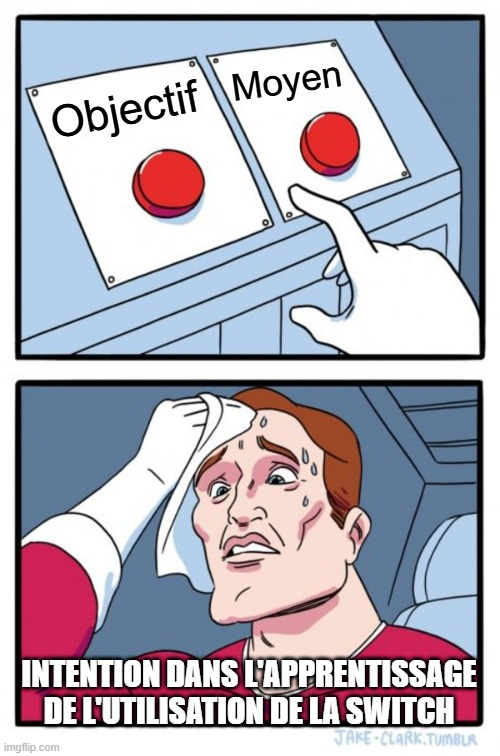
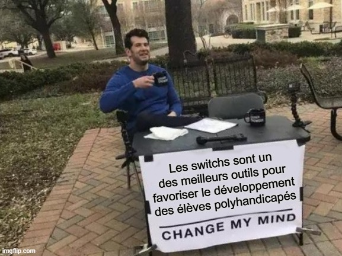
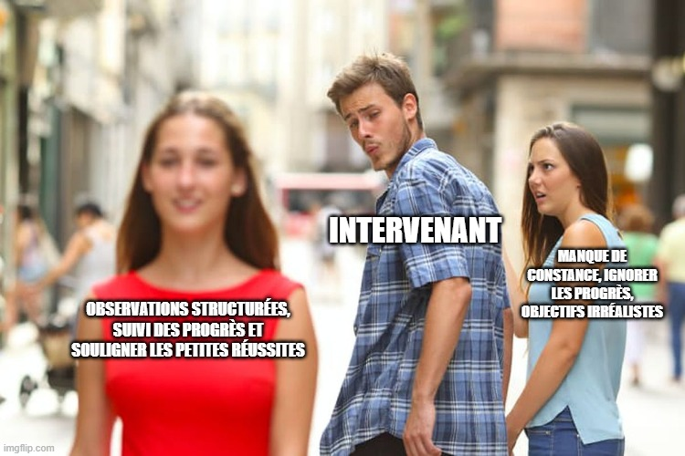
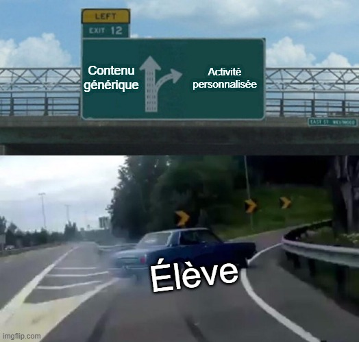

L’utilisation des switchs adaptées ouvre un large éventail d’opportunités pédagogiques pour les élèves ayant les besoins les plus complexes, notamment ceux en situation de polyhandicap. Avec l’évolution de la technologie, cet outil polyvalent continue d’élargir les possibilités d’inclusion et d’apprentissage dans le cadre scolaire. C’est un moyen unique de mettre la personne y ayant recours en interface avec son environnement.
Les switchs permettent un accès simplifié à des outils de communication, allant des dispositifs de base comme le Big Mack ou le Step-by-Step, aux outils plus avancés qui nécessitent des fonctionnalités comme le balayage ou l'accès à plusieurs boutons. Cela permet aux élèves ayant des déficiences motrices ou verbales de participer activement aux échanges en classe et de communiquer leurs besoins et idées de manière plus autonome.
L'intégration des switchs dans les contrôleurs d’environnement et la domotique permet aux élèves d’interagir de façon significative avec leur environnement quotidien. Par exemple, un utilisateur peut utiliser un switch pour participer à des activités telles que la cuisine, en activant des appareils adaptés. Ils peuvent également ajuster leur cadre de vie selon leurs préférences, comme l’allumage ou l'extinction des lumières, ou le réglage de la température. Cet aspect contribue directement à l’acquisition de compétences d’autonomie essentielles pour une meilleure qualité de vie. Dans ce domaine, avec l’évolution actuelle de la technologie, la limite de ce qui est possible est l’imagination.
Les loisirs constituent une dimension importante de la vie d'un élève, et les switchs permettent d'y accéder de manière adaptée. Elles peuvent être utilisés pour manipuler des jouets adaptés ou même pour participer à des jeux vidéo, offrant ainsi une expérience ludique et inclusive. Le développement de la compatibilité entre les switchs et les jeux vidéo permet à de plus en plus d’élèves de participer à des activités récréatives, renforçant ainsi leur bien-être émotionnel et leur participation sociale. Ces activités sont normalisantes et permettent à la fois la socialisation avec leurs pairs en situation de handicap et d’autres personnes de leur entourage.
L'utilisation régulière d'une switch adaptée contribue au développement ou au maintien des capacités motrices. En fonction de la partie du corps utilisée pour activer la switch (main, pied, tête, etc.), cet outil permet de travailler la force et la précision des mouvements. De plus, il favorise la coordination œil-main, compétence essentielle dans de nombreuses activités éducatives et de la vie quotidienne. Étant donné qu’elles peuvent être associées à des stimuli qui sont particulièrement motivants pour l’élève, elles constituent un moyen intéressant d’intégrer des mouvements au quotidien.
Toutefois, pour bénéficier pleinement des avantages offerts par les switchs, un travail d’apprentissage est souvent nécessaire. Chaque élève a des capacités et des besoins différents, ce qui signifie que l’intégration de ces appareils peut nécessiter un entraînement adapté et progressif. Cet apprentissage peut être long, en particulier pour les élèves ayant des besoins complexes, mais il offre des résultats significatifs en termes d’autonomie et de participation active.
Dans un milieu scolaire, l’apprentissage de l’utilisation des switchs peut à la fois être un moyen et un objectif. Le développement de l'efficacité dans leur utilisation peut être une étape dans l’apprentissage d’un outil de communication (de type step by step ou communicateur à plusieurs cases). Cela peut aussi être une première étape pour le développement de compétences en numératie plus poussée. L’apprentissage de cet outil peut aussi constituer un objectif en tant que tel. Si l’élève apprend dès ses premières années à l’école à les utiliser, il pourra avoir accès à davantage d’opportunités au niveau pédagogique, des loisirs, de la socialisation et de la communication. Cela pourrait ainsi être une priorité pour les apprenants qui sont au début de leur parcours scolaire. Ainsi, dépendamment de la perspective de l'intervenant, de l'approche utilisée et de l'intention derrière les activités scolaires, il est parfaitement valide de considérer l'apprentissage de l'utilisation des switchs comme une finalité en soi (objectif) ou comme un tremplin vers d'autres réalisations (moyen). Toutefois, il n'y a pas nécessairement une dichotomie entre les deux; la finalité (avoir un accès efficace et polyvalent) peut aussi être un moyen vers d'autres apprentissages, il s'agit donc principalement d'une question de point de vue.
Les switchs sont des outils d’apprentissage polyvalents permettant aux élèves de développer des habiletés variées à travers des activités adaptées. Puisque l’on traite ici de ces appareils en contexte scolaire, une réflexion spécifiquement en lien avec la pédagogie est pertinente. De plus, leur utilisation s’inscrit particulièrement bien dans le cadre des six compétences du Programme éducatif pour la déficience intellectuelle profonde (PÉDIP). Ce qui suit en est une brève exploration. Il serait possible d’effectuer l’exercice pour d’autres programmes, qu’il soit de loisir, d’éducation ou de réadaptation.
L’utilisation de switchs permet aux élèves une opportunité unique d’interagir avec leur environnement, tout en favorisant l’acquisition de compétences clés. Sur le plan d’agir efficacement sur le plan sensorimoteur, les switchs permettent aux élèves de développer leur motricité en travaillant leur coordination oeil-main. Tel que mentionné plus haut, les switchs sont un moyen pour les élèves d’effectuer des gestes dans des contextes contrôlés, c’est-à-dire qu’étant donné que l’outil est placé au même endroit et ajusté aux compétences de l’élève, il peut améliorer de manière progressive la précision de ses gestes. Par ailleurs, leur utilisation est un bon moyen d’encourager la persévérance dans la réalisation d’une action motrice, étant donné leur association possible avec un large éventail de stimuli renforçateurs. C’est ainsi un médium pertinent par rapport aux trois composantes de cette compétence.
Pour ce qui est d’exprimer adéquatement ses besoins et ses émotions, les switchs permettent d’effectuer des choix ou de manifester ses préférences de manière autonome, même sans recours au langage oral. Par exemple, en comparant la rapidité ou l’intérêt de l’élève envers sa switch lors d’une activité donnée, il est possible d’effectuer des inférences par rapport à ses intérêts. Il est par la suite possible de manipuler l’environnement et les activités proposées en fonction de ces données.
Par leur utilisation dans des jeux ou des activités de groupe, les switchs permettent d’interagir avec son entourage, donnant l'occasion aux élèves de participer activement avec leurs pairs et d’intégrer des dynamiques collectives. Par ailleurs, ces dispositifs soutiennent l’adaptation à l’environnement en donnant aux élèves le contrôle de certaines actions du quotidien, comme allumer une lumière ou activer un jouet. Ainsi, l’usage des switchs favorise l’engagement des élèves dans des activités scolaires et récréatives, renforçant leur sentiment de participation et d’autonomie.
L’utilisation des switchs dans un cadre ludique ou expérimental est une étape préalable pour préparer l’élève à les utiliser afin de communiquer efficacement avec son entourage. À travers des jeux et des activités interactives, les élèves apprennent d’abord à manipuler les switchs de manière intentionnelle, développant ainsi leur compréhension du lien cause à effet et leur maîtrise technique. L’utilisation du Step by Step ou du Big Mack est d’ailleurs un incontournable pour beaucoup d’élèves ayant un fonctionnement du niveau de la déficience intellectuelle profonde. D’autres appareils utilisant plusieurs cases ou boutons qui s’apparentent aux switchs peuvent aussi aussi être utilisés, allant jusqu’à 8 cases. Ainsi, bien que les activités ou jeux utilisés avec la switch n’ont pas nécessairement de fonction communicative, l'entraînement à l'utilisation des switchs grâce à celles-ci peut être le préalable à l’utilisation future d’outils alternatifs de communication.
L’utilisation des switchs permet de s’adapter à son environnement ou de l’adapter à soi, selon un principe prévisible: une action crée quelque chose dans l’environnement, un stimulus, une modification dans l'espace immédiat. Cela permet de développer progressivement le principe de causalité. De façon contextualisée, un élève peut ainsi avoir une influence sur son environnement grâce à l’utilisation des switchs. Par exemple, un élève peut activer divers appareils à l’aide d’un contrôleur d’environnement. Diverses technologies alliant l’IOT et la domotique sont en développement actuellement et vont éventuellement permettre un plus grand accès à un contrôle significatif sur l’environnement pour les personnes ayant divers handicaps. En ce qui a trait au développement de la compétence en tant que tel, la composante d’ajuster ses actions est particulièrement reliée à l’utilisation d’outils technologiques étant donné son lien étroit avec le développement de la causalité.
Les limitations motrices amenées par le polyhandicap, que la majorité des élèves suivant le PÉDIP présente, causent des défis quant à leur participation aux activités de groupes. Les switchs peuvent alors leur permettre de déjouer leur handicap en leur amenant des moyens de s’engager dans des activités de leur milieu qui sont typiquement attendues en fonction de leur rôle social, que ce soit d’élève, d’enfant ou de participant actif à la vie de sa communauté. Lors d’activités de groupe, ils peuvent activer des outils de communication ou des objets ayant un impact important sur l’environnement qui vont créer des réactions dans leur entourage (e.g. Step By Step avec encouragements, outils pour projet de cuisine ou d’arts plastiques). Cela leur permet de participer de manière significative à la vie de groupe.En participant activement à ces projets, les élèves renforcent leur compréhension des outils à leur disposition, mais découvrent également le plaisir et la satisfaction de contribuer à des activités collectives qui nourrissent leur sentiment d’appartenance et leur engagement.
L’efficacité dans l’utilisation de la switch peut (et devrait) également être évaluée, en se concentrant sur la maîtrise de l’outil en tant que tel. Il existe des outils qui permettent de graduer la progression des élèves dans l’utilisation des switchs adaptées. Parmi eux, la Switch Progression Roadmap développée par SENICT est probablement le modèle ayant le plus d’utilisateurs et étant utilisée depuis le plus longtemps (début des années 2000). 
Ce modèle propose une approche structurée et progressive qui aide à accompagner l'élève dans ses apprentissages. Il revêt un intérêt particulier en raison de sa micrograduation. Il s'avère donc particulièrement adapté aux élèves évoluant à des stades développementaux fondamentaux; il y a ainsi une dizaine d’étapes permettant de qualifier l’évolution à un niveau expérientiel. Par conséquent, il est possible de situer un élève par rapport à certains indicateurs et d’en déduire des objectifs pour la poursuite de ses apprentissages. Cependant, il est important de garder à l’esprit que chaque élève ayant un polyhandicap étant fondamentalement différent, certaines étapes de la progression pourraient s’avérer difficiles ou même impossibles pour un de ceux-ci. Ainsi, bien que les étapes soient numérotées et placées dans un ordre, il est possible que des élèves puissent être bloqués à un niveau et réussir les étapes suivantes sans problème. Il s’agit donc d’un outil intéressant, particulièrement en contexte de déficience intellectuelle profonde, qui devrait cependant être utilisé de manière flexible et être accompagné d’un jugement professionnel, idéalement dans un contexte interdisciplinaire. L’outil est partagé librement par l’organisme le publiant; une traduction maison est disponible à la fin de cette page.
De manière générale, en plus de situer l’élève dans le contexte de son programme éducatif et de son progrès avec la Switch Progression Roadmap, d’autres méthodes d’observation peuvent être utilisées afin de comparer les élèves entre eux ou de manière intra-individuelle. Par exemple, on peut mesurer le temps requis pour qu'un élève parvienne à utiliser efficacement sa switch dans un contexte donné, ou encore observer le nombre de répétitions nécessaires pour réaliser une tâche. La durée de concentration sur l’activité est un autre indicateur pertinent.
L’évaluation peut aussi prendre en compte des données d’appréciation subjective de l’élève; en observant la manière dont l’élève interagit avec l’activité : prend-il du plaisir ? Comment réagit-il aux stimuli ? Est-il capable de maintenir une attention partagée avec l’intervenant ou les autres participants? Cette approche permet d’évaluer non seulement la performance technique de l’élève, mais aussi son engagement et son bien-être dans l’activité.
Une méthode complémentaire pour enrichir les approches mentionnées consiste à recourir à l’évaluation quantitative de la performance d’un élève, disponible sur ce site dans la section "outil pédagogique", à l’activité intitulée "Évaluation de l’utilisation d’une switch". Cette méthode, bien qu’encore expérimentale, se distingue comme la seule, à notre connaissance, capable de fournir des indicateurs numériques et statistiques sur l’efficacité de l’utilisation des switchs par un élève. Elle peut également être utilisée pour comparer la performance d’un élève selon différentes positions ou configurations d’équipement, permettant ainsi d’optimiser les conditions de succès. Pour plus d’informations sur cet outil et son utilisation, le guide est disponible à ce lien: Évaluation - Adaptatech.
Le choix de la modalité d’évaluation repose sur le jugement de l’enseignant ou de l’intervenant accompagnant l’élève. Une combinaison de plusieurs approches serait probablement optimale. Par ailleurs, aucune de ces méthodes n’est bien adaptée pour comparer les élèves entre eux; elles sont conçues pour évaluer de manière intra-individuelle. La Switch Progression Roadmap ou le rapport produit sur ce site permettent d’obtenir un point de donnée dans le temps, les revisiter régulièrement serait une manière adéquate d’obtenir des données objectives et de suivre le progrès d’un élève.
Peu importe la méthode pédagogique utilisée, le type d’activité ou l’environnement de l’élève, certains principes demeurent fondamentaux. L’adaptation physique de la switch, incluant son positionnement et son choix en fonction des capacités motrices de l’élève, ne relève pas du rôle pédagogique de l’intervenant scolaire. Ce travail, souvent réalisé par des spécialistes comme les ergothérapeutes, est une condition préalable essentielle pour permettre aux élèves de tirer pleinement parti des activités éducatives et de progresser efficacement. Il est toutefois nécessaire de s’assurer que l’élève soit confortable et bien outillé lorsqu’il a son équipement et de se faire son représentant s’il n’a pas un accès suffisant considérant ses capacités. Une fois que cela est pris en compte, diverses pratiques peuvent être mises en place pour favoriser les apprentissages.
Afin de favoriser une bonne utilisation des switchs en contexte scolaire, Ian Bean, le créateur de SENICT, propose trois critères pour qu’une activité soit pertinente pour un élève: qu’elle soit motivante, qu’elle ait une signification particulière et que l’élève puisse avoir suffisamment d’opportunités de la mettre en pratique. Ces critères offrent un cadre de réflexion intéressant qui permet de s’assurer que l’élève développe ses compétences tout en ayant du plaisir.
À l’instar de n’importe quelle activité pédagogique, connaître la motivation de l’élève est essentiel au bon déroulement d’une activité. Observer de manière structurée les préférences d’un élève et de s’informer auprès de ses proches sont les meilleures méthodes afin d’obtenir cette information vitale. Tous les élèves, peu importe leur niveau de développement, montrent des intérêts qui sont variables dépendamment du stimulus. Il s’agit souvent de musique ou de contenu multimédia en particulier. Il peut aussi s’agir de sons, de couleurs, de mouvements, bref, de n’importe quelle expérience qui est typiquement présentée aux enfants. Dans un contexte multiculturel, il est aussi important d’investiguer du contenu adapté à l’élève, par exemple dans sa langue d’origine. Une fois que la motivation de l’élève est découverte, il est possible de l’utiliser afin d’en créer ou découvrir d’autres, par exemple, pour un élève qui adore un artiste, lui permettre d’en écouter d’un style similaire. Pour un élève qui est particulièrement sociable, peut-être que la motivation peut venir en animant la classe, par exemple en activant un jouet pour d’autres élèves. La motivation peut aussi être dans l’interaction avec l’intervenant, qui peut réagir (en beurrant épais!) au stimulus créé par l’activation d’une switch par l’élève.
Au cours d’une journée typique en classe, l’élève devrait avoir de multiples occasions d’utiliser sa switch. Comme pour tout apprentissage auprès d’une clientèle présentant une déficience intellectuelle profonde, la répétition est un facteur clé pour favoriser le développement des compétences. Il est donc essentiel de proposer des contextes d’utilisation réguliers (chaque jour) et fréquents (plusieurs fois par jour).
Ces contextes peuvent prendre des formes variées : des activités individuelles, des routines structurantes (comme lancer la chanson du bonjour en début de journée) ou encore des activités de groupe (participer à un jeu collectif en activant un interrupteur).
L’apprentissage de l’utilisation d’une switch peut être comparé au développement des compétences en lecture. Un élève qui a facilement accès à des livres, à des textes variés et à des environnements riches en opportunités de pratique sera naturellement mieux placé pour progresser. Ce succès est amplifié par le soutien d’adultes qui l’accompagnent dans cet apprentissage, par exemple au travers de lectures guidées, d’échanges stimulants ou d’encouragements constants. De la même manière, un élève qui apprend à utiliser une switch a besoin d’être plongé dans des environnements diversifiés où cet outil est intégré de façon significative et répétée.
Afin de fournir des opportunités optimales, il est essentiel que le matériel soit disponible et adapté. Chaque élève devrait disposer d’une switch correspondant à ses capacités dès que possible, avec un positionnement constant lors des activités. Les organisations devraient maintenir une banque d’appareils variée, permettant des essais, des ajustements et des dépannages rapides.
L’implication de la famille constitue également un levier important pour multiplier les occasions d’apprentissage. L’intégration des switchs dans des routines familiales quotidiennes, comme allumer une lumière ou lancer une musique, offre des contextes riches et motivants pour l’élève. Cela favorise son engagement tout en renforçant son rôle actif au sein de la famille. Cependant, la mise en place de bonnes pratiques nécessite de surmonter des obstacles tels que la disponibilité du matériel, l’élaboration d’activités adaptées et les défis liés à l’apprentissage.Cela est particulièrement vrai dans l’implication de la famille, qui n’a pas accès aux mêmes ressources et qui doit déjà prodiguer des soins et de l’accompagnement significatif à leur enfant.
Les activités proposées à l’élève doivent avoir un sens concret et immédiat. Une switch n’est pas qu’un outil à manipuler, elle doit produire un effet tangible et important pour l’élève dans son environnement, que ce soit d’animer un jouet, déclencher une musique ou provoquer une réaction enthousiaste d’un adulte. Ces retours immédiats donnent à l’élève une compréhension claire de l’impact de ses actions, renforçant son engagement et son intérêt.
La personnalisation est également essentielle. Une switch peut être configurée pour répondre aux préférences spécifiques de l’élève, comme lancer une chanson aimée ou un jeu interactif. Cela ne se limite pas au plaisir : l’élève comprend que ses goûts et ses choix sont valorisés, ce qui contribue à son sentiment d’importance et d’appartenance.
Ces expériences peuvent favoriser l’autonomie, en permettant à l’élève de réaliser des actions significatives comme allumer une lampe, avancer une séquence ou participer activement à une routine. Elles sont aussi un tremplin pour les interactions sociales, en permettant à l’élève de participer à des moments collectifs, comme de lancer une chanson pour ses camarades et de s’impliquer dans des échanges riches et valorisants, renforçant ainsi son rôle actif au sein du groupe. Bref, peu importe le niveau cognitif de l’élève, avoir à sa disposition des actions qui ont un impact significatif sur des sphères essentielles au bien-être humain (autonomie, sentiment de compétence et socialisation) est capital tout comme pour n’importe qui d’autre. Ce facteur, parmi les trois proposés par Ian Bean, est le plus intangible, mais le plus porteur de normalisation, d’humanisation et d'empowerment, de par la considération envers l’élève, en tant que personne complète, qu’il apporte.
Pour garantir un apprentissage efficace et inclusif, il est essentiel de mettre en œuvre des pratiques adaptées dans l’utilisation des switchs. Ces outils technologiques, bien que parfois intuitifs, nécessitent une approche tenant compte des besoins individuels des élèves, de leurs capacités et de leurs préférences. S’appuyer sur des concepts tels que ceux présentés ci-après peut s’avérer utile, mais cela ne saurait remplacer une pratique réflexive et un travail d’équipe rigoureux.
La causalité est un concept fondamental à comprendre dans l’apprentissage et l’évaluation de l’utilisation des switchs, mais il s’agit d’un continuum, pas d’une compétence qui est acquise ou non. Beaucoup de personnes supposent que l’élève a soit une compréhension de la causalité ou non. Cela simplifie de manière trop importante un concept riche et complexe, comme de dire que la permanence de l’objet est acquise ou non. Plus les connaissances sur le développement de l'enfant en bas âge se développent, plus ce type de modèle dichotomique perd la faveur pour des modèles progressifs et dimensionnels. Concrètement, cela signifie que ce lien se développe progressivement, souvent à partir d’actions accidentelles qui, bien que non intentionnelles au départ, ouvrent la voie à une prise de conscience plus claire de la relation entre les gestes de l’élève et les effets produits dans l’environnement.
Lorsqu’un élève active une switch par hasard, cela peut déclencher un son, une lumière ou un autre stimulus. Si cette expérience est répétée et accompagnée de renforcements positifs, l’élève commence à associer ses gestes à ces résultats tangibles. Ce processus n’exige pas qu’il ait immédiatement une intention consciente. Chaque activation, même accidentelle, est une opportunité d’apprentissage qui alimente la compréhension de la causalité.
Au fil du temps, cet apprentissage évolue. L’élève peut passer d’une reconnaissance vague, particulière et spécifique d’un effet à une compréhension plus claire, généralisée et intentionnelle. Dans le cadre de l’utilisation de la switch, cela s’articule par une plus grande efficacité dans son utilisation à travers différents contextes. Ces actions, répétées et renforcées dans des contextes significatifs, permettent de transformer une découverte fortuite en un outil de communication et d’autonomie.
L’apprentissage de la causalité avec une switch se situe sur un continuum, plutôt que dans une dichotomie de "compréhension" ou "non-compréhension". Prendre cette perspective permet de valoriser chaque étape, aussi petite soit-elle, dans ce processus. En offrant des retours immédiats et adaptés aux préférences de l’élève et en multipliant les opportunités de pratique, on favorise non seulement la maîtrise technique, mais aussi l’autonomie et la confiance en soi.
Les prompts ou indicateurs peuvent être verbaux, visuels ou sonores, encourageant l’élève à appuyer sur sa switch pour activer ou continuer une activité. Sur ce site, ce sont les sons et images indicateurs qui se présentent lorsque l’activité est en pause. Leur sélection doit être adaptée au stade de développement et aux besoins spécifiques de l’élève. Le principe fondamental est que la finalité devrait être de privilégier des indicateurs qui mettent l’accent sur le stimulus ou l’objet activé par la switch, plutôt que sur l’action elle-même.
Cependant, pour un élève débutant son utilisation de cet outil ou étant aux premiers stades de développement, une image de switch peut être utilisée comme indicateur, en particulier dans des activités numériques. Ce type de prompt aide à mettre en évidence l’action requise (car elle fait directement référence à l’objet qui est proximal par rapport à l’élève). Cependant, pour un élève ayant une certaine maîtrise de sa switch, il est préférable de passer à des indicateurs orientés vers le résultat. Une image représentant le stimulus attendu, comme un personnage de dessin animé ou un jouet, est plus pertinente (e.g. une image de Chase pour une vidéo de la Pat Patrouille). Dans ce cas, des instructions verbales telles que « Fais jouer la vidéo » ou « Active le jouet ! » sont non seulement plus significatives pour l’élève, mais elles renforcent également la compréhension du lien entre l’action et son effet.
Les indicateurs sonores sont également utilisés, notamment dans des ressources comme HelpKidzLearn ou SENICT, pour signaler qu’il est temps d’agir (c’est souvent une note de piano). Ces sons, bien qu’efficaces pour capter l’attention, ne sont généralement pas spécifiques à une activité ou à un résultat particulier. Ils servent plutôt de signal générique pour initier une action. Pour des élèves ayant des besoins particuliers, comme une déficience visuelle, il pourrait être intéressant d’expérimenter avec différents types de sons spécifiques pour représenter des actions ou des résultats précis, bien que cette approche ne soit pas encore couramment utilisée ni documentée. Il est crucial de choisir un indicateur sonore capable de capter efficacement l’attention de l’élève. Cette démarche nécessite souvent une période d’expérimentation pour identifier le son le plus engageant et motivant, celui qui incitera l’élève à agir de manière autonome.
En combinant des indicateurs personnalisés et significatifs, alignés sur les capacités et les préférences de l’élève, on peut renforcer son implication et soutenir le développement de son autonomie. Par exemple, grâce à un indicateur adapté, un élève pourrait accomplir une activité numérique seul, surmontant ainsi un défi souvent majeur (effectuer une activité significative de manière indépendante). Cette approche favorise des expériences d’apprentissage plus accessibles et gratifiantes et offre un outil concret et manipulable aux éducateurs qui leur offre une occasion de soutenir leurs élèves.
Si l’élève démontre une compréhension suffisante de l’activité et une capacité à y participer de manière autonome, il peut être opportun de réduire progressivement le recours aux indicateurs. Ceux-ci peuvent être comparés à des consignes structurantes, essentielles au départ, mais qui peuvent devenir superflues une fois l’autonomie acquise. Cependant, il est crucial de reconnaître que certains élèves auront besoin de ces soutiens tout au long de leur parcours scolaire. Le retrait doit donc être ajusté avec discernement, en fonction des besoins individuels, pour garantir que chaque élève bénéficie d’un environnement d’apprentissage adapté et optimal.
L’utilisation des switchs en classe ne devrait jamais être une simple routine ou une activité uniforme appliquée à tous les élèves. Chaque interaction avec cet outil devrait avoir un objectif clair, qu’il s’agisse de développer une compétence, de soutenir un apprentissage ou de répondre à un besoin spécifique de l’élève. Même lorsque l’activité n’est pas intégrée dans un programme structuré d’apprentissage de l’utilisation de la switch, elle devrait être liée à un apprentissage concret pour éviter qu’elle devienne une simple répétition sans but prédéfini.
Adopter une démarche réflexive quant à l’intention pédagogique derrière chaque activité est une pratique simple et pourtant essentielle pour en assurer la pertinence. C’est probablement un réflexe déjà acquis pour les intervenants travaillant avec les enfants ayant des besoins complexes, mais qui peut aussi se réaliser de façon concrète et consciente. Cela implique de se poser régulièrement la question : pourquoi utilise-t-on (ou non) une switch dans ce contexte précis ? Par exemple, une même activité, comme activer une chanson, peut servir différents objectifs : encourager la socialisation pour un élève qui anime la classe, travailler la motricité pour un autre ou encore explorer de nouveaux intérêts pour diversifier les préférences d’un troisième.
Enfin, il est important d’adapter les activités aux besoins et aux capacités de chaque élève. Une activité significative pour l’un peut nécessiter des ajustements pour un autre, afin de garantir que chaque élève progresse à son propre rythme tout en restant engagé. Cette personnalisation rend l’apprentissage plus pertinent et enrichissant, transformant l’utilisation des switchs en une véritable opportunité éducative.
Malgré le potentiel des switchs pour favoriser l’apprentissage et l’autonomie, leur utilisation peut comporter certains écueils. Une mise en œuvre sans réflexion ou sans adaptation aux besoins des élèves risque de limiter leur efficacité. Prendre conscience de ces pièges et les anticiper permet de créer un environnement plus favorable, où les switchs deviennent un véritable levier de développement et de participation.
Le fly swatting, défini par Tony Jones de Talksense, désigne un comportement par lequel un élève active une switch de manière purement mécanique, sans réelle compréhension de la tâche ou d'implication cognitive. C’est typiquement un élève qui appuie sur le bouton dès qu’il lui est présenté, de manière répétée, avec une fréquence élevée. Ce phénomène peut survenir lorsque ces outils sont utilisés sans indications claires, sans retour tangible, ou avec des stimuli variés et incohérents. Dans ce contexte, l’élève est conditionné à activer la switch pour obtenir une réponse immédiate, souvent sociale, comme une réaction positive ou encourageante de l’intervenant, plutôt que pour atteindre un objectif intentionnel. Bien que le renforcement social (les encouragements suite à l’utilisation de la switch) dans un contexte d’activité soit typiquement indiqué, dans le cas d’un élève qui présente ce comportement, il serait à éviter, à tout le moins temporairement, afin de renforcer le lien entre l’action (appuyer la switch) et le résultat (soit l’activité ou le message communiqué).
Afin de déterminer si l'élève présente un comportement de fly swatting, certaines observations peuvent être faites auprès de l'élève. Des indices peuvent inclure une activation rapide et répétée de la switch, sans regard ou attention portée aux résultats produits, ainsi qu’un manque de variation dans le comportement, même lorsque les consignes ou le contexte de l’activité changent. On peut aussi remarquer une réponse systématique et automatique, peu importe le contenu ou le stimulus associé. Finalement, l'absence d'anticipation et de satisfaction face au stimulus provoqué par l'activation de la switch peut également être révélatrice. Ces observations doivent être réalisées dans divers contextes pour confirmer que le comportement persiste indépendamment des ajustements ou des renforcements fournis.
Ce comportement peut donner l’illusion de participation active, mais elle ne permet pas de mesurer si l’élève comprend réellement le lien entre son action et ses effets. En d’autres termes, il s’agit d’un acte passif, dépourvu d’un engagement mental véritable, qui se limite à une réponse automatique au stimulus présenté. Ce comportement peut être renforcé par des pratiques pédagogiques non réfléchies, comme la présentation d’une switch en l’absence de stimulus (sans qu’elle soit branchée à une activité) ou la présentation d’un appareil de type step by step de manière non spécifique (c’est-à-dire, sans contexte, sans étiquette, sans routine ou de manière qui ne revêt pas une signification particulière pour l’élève).
Toutefois, pour certains élèves, surtout chez ceux ayant les besoins les plus complexes, le fly swatting peut être une étape préliminaire dans le développement de l’utilisation des switchs. Lors des premières phases d’apprentissage, le simple fait d’amener un élève à interagir avec une switch, même sans intention consciente, peut représenter un progrès. Cette étape initiale doit cependant être suivie d’un apprentissage progressif et structuré qui pousse l’élève à dépasser cette réponse conditionnée pour développer une compréhension plus approfondie de la causalité et de l’intention derrière l’utilisation de la switch. Il ne faut pas que cela devienne un plateau pour l’élève simplement parce qu’il est capable d’appuyer sur sa switch, cela doit être une étape transitoire dans son développement.
Lorsqu’une activité avec une switch n’est pas liée à un contexte significatif ou à un objectif pédagogique clair, elle peut perdre tout son sens pour l’élève. Par exemple, déclencher une action ou un stimulus sans pertinence pour l’élève rend l’activité mécanique et déconnectée de ses intérêts, ce qui peut entraîner désengagement ou participation superficielle. La contextualisation est donc essentielle pour donner du sens à l’utilisation de la switch et encourager une réelle implication. Par exemple, activer une lumière peut être intégré dans une routine quotidienne, comme préparer une pièce pour une activité, tandis qu’une chanson peut s’inscrire dans un moment collectif ou un jeu. Cette contextualisation peut aussi se réaliser en prenant en compte les préférences individuelles; un élève pourrait avoir sa séance quotidienne d’activité avec une activité numérique ou un jouet adapté favori.
Un manque de contextualisation peut aussi se manifester par des activités trop génériques ou répétitives, sans lien avec les préférences ou les progrès de l’élève. Même si l’élève utilise la switch, l’absence de lien clair entre son action et l’objectif limite les apprentissages. Il faut donc trouver un équilibre entre la nécessité de trouver la plus grande quantité de contextes d’utilisation des outils pédagogiques et s’assurer que ceux-ci correspondent à la zone proximale de développement de l’élève.
Un défi majeur dans l’utilisation des switchs est de trouver le juste équilibre entre offrir le soutien nécessaire à l’élève et favoriser son autonomie. Trop de soutien risque de limiter l’apprentissage en réduisant les opportunités pour l’élève de prendre des initiatives ou d’explorer par lui-même. Par exemple, l’utilisation excessive du soutien physique (main sous main). À l’inverse, un soutien insuffisant peut entraîner frustration et désengagement, empêchant l’élève de progresser. Typiquement, les élèves ayant des besoins complexes vont avoir besoin de soutien en tout temps. Cependant, il demeure nécessaire d’accompagner l’élève de manière réfléchie : fournir une aide adaptée lorsqu’il rencontre des obstacles, tout en sachant se retirer progressivement pour lui permettre d’assumer davantage de contrôle. Ce retrait doit être planifié et basé sur une observation attentive des signaux de l’élève, comme sa capacité à répéter une action de manière cohérente ou à résoudre un problème avec un minimum d’intervention. Un soutien bien dosé aide l’élève à développer sa confiance et son autonomie, tout en garantissant que les activités demeurent significatives et motivantes.
Bien que l’utilisation des switchs se concentre principalement dans le cadre scolaire, limiter leur usage uniquement à la classe peut restreindre leur impact. Intégrer ces outils dans les routines familiales ou dans d’autres environnements permet d’élargir les opportunités d’apprentissage et de renforcer la maîtrise de l’élève. Par exemple, tel que mentionné ci-haut, une switch pourrait être utilisée à la maison pour allumer une lumière, faire jouer de la musique ou participer à une activité en famille. Elle pourrait aussi être utilisée pour des responsabilités au sein de l’école, comme de communiquer des messages à d’autres intervenants. Il convient de se rappeler que pour les élèves ayant les besoins les plus complexes, la switch (et l’appareil de type step by step qui en est une variante) constitue le moyen d’accès principal à l’environnement, l’interaction sociale et la communication. Ainsi, bien qu’il s’agisse d’un défi significatif, leur utilisation dans la communauté serait souhaitable, lorsque possible. Ces applications concrètes aident l’élève à comprendre que les compétences acquises en classe peuvent être transférées à d’autres contextes, tout en favorisant son autonomie et son engagement dans différents aspects de sa vie quotidienne.
Sources :
Deux sources d’inspiration principale sont à la base de cette analyse. D’abord, SENICT, la ressource créée par Ian Bran, qui est le chef de
file mondial en ce qui a trait à la pédagogie en lien avec l’utilisation des switchs adaptées. En deuxième lieu, Talksense, qui est un blog
créé par Tony Jones, avec une multitude de ressources en lien avec l’éducation spécialisée, plus particulièrement des élèves ayant les
incapacités les plus importantes.
Comportement approprié en utilisant les technologies adaptées (prérequis)
Rencontrer des activités et expériences générées par les technologies adaptées
Prendre conscience des activités et expériences générées par les technologies adaptées
Répondre de manière cohérente aux activités générées par les technologies adaptées
Devenir proactif dans ses intentions
Développement de la relation de cause à effet
Explorer l'utilisation de deux switches dans des activités simples (sans balayage formel)
Utiliser une switch dans des activités de timing
Utiliser deux switches dans des activités simples
Faire des choix indépendants avec une ou deux switches
Choisir un objet spécifique ou répondre à une demande